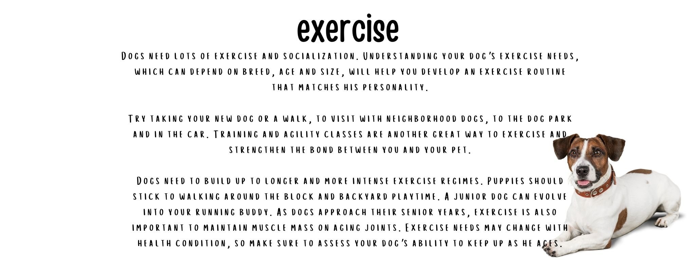
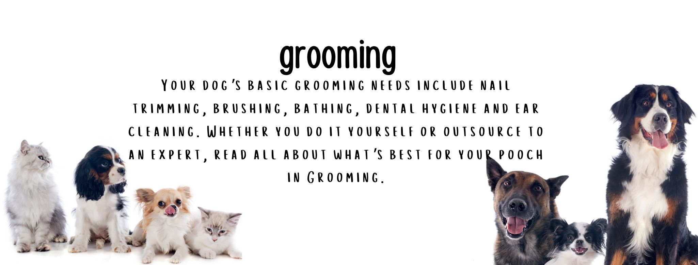
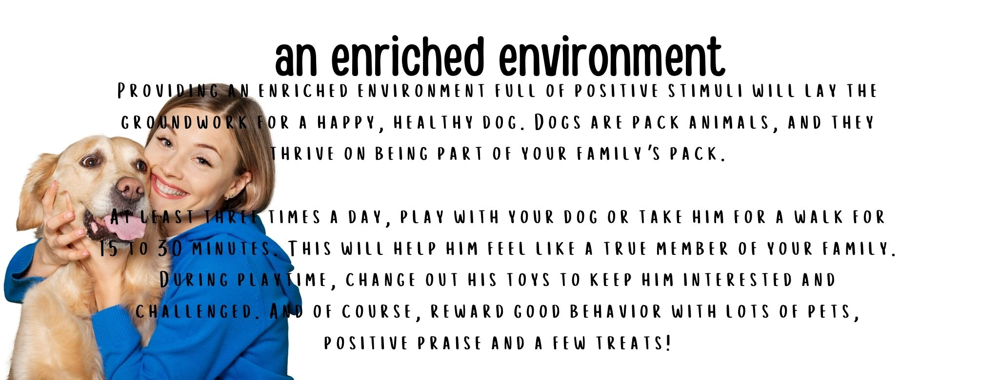
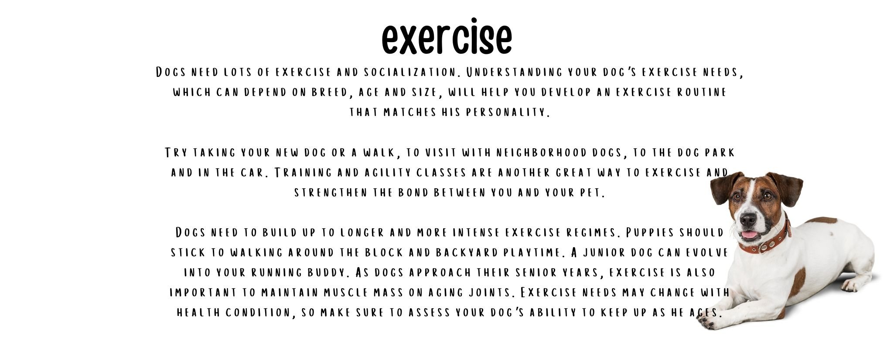
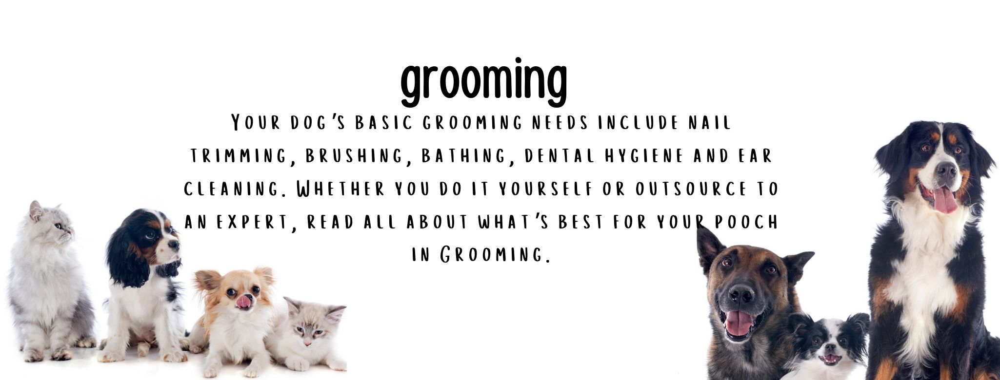
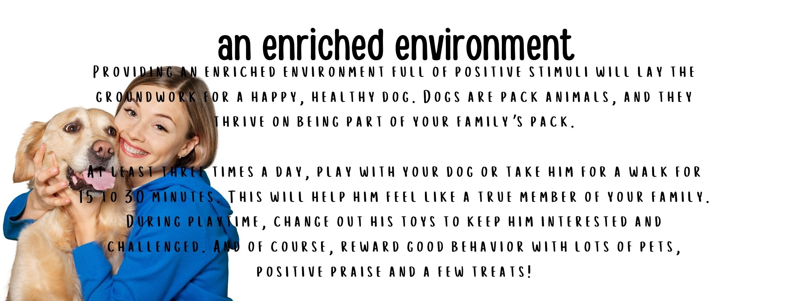

What to Eat and What Not to?
- Bread
- Cheese
- Chocolate
- Eggs
- Fish
- Garlic
- Ice cream
- Honey
- Peanut Better
- Cinnamon
Yes, dogs can eat bread. Small amounts of plain bread (no spices and definitely no raisins) won’t hurt your dog, but it also won’t provide any health benefits either. It has no nutritional value and can really pack on the carbohydrates and calories, just like in people. Homemade breads are a better option than store-bought, as bread from the grocery store typically contains unnecessary preservatives, but it’s best to avoid it altogether.
Yes, dogs can eat cheese in small to moderate quantities. As long as your dog isn’t lactose intolerant, which is rare, but still possible in canines, cheese can be a great treat. Many kinds of cheese can be high in fat, so go for lower-fat varieties like cottage cheese or mozzarella. Many dogs enjoy their very own dog-specific Himalayan dog chew made of dried cheese (but we don’t recommend sharing it).
No, dogs should never eat chocolate. This isn’t just an urban legend. Chocolate contains toxic substances called methylxanthines, which are stimulants that stop a dog’s metabolic process. Even just a little bit of chocolate, especially dark chocolate, can cause diarrhea and vomiting. A large amount can cause seizures, irregular heart function, and even death. Do not have chocolate in an accessible location for your dog. If your dog does ingest chocolate, contact a veterinarian as soon as possible.
Yes, dogs can eat eggs. Eggs are safe for dogs as long as they are fully cooked. Cooked eggs are a wonderful source of protein and can help an upset stomach. However, eating raw egg whites can contribute to biotin deficiency, so be sure to cook the eggs all the way through before giving them to your pet.
Yes, dogs can eat fish. Fish contains good fats and amino acids, giving your dog a nice health boost. Salmon and sardines are especially beneficial — salmon because it’s loaded with vitamins and protein, and sardines because they have soft, digestible bones for extra calcium. With the exception of sardines, be sure to pick out all the tiny bones, which can be tedious but is definitely necessary. Never feed your dog uncooked or undercooked fish, only fully cooked and cooled, and limit your dog’s fish intake to no more than twice a week.
No, dogs shouldn’t eat garlic. Like onions, leeks, and chives, garlic is part of the Allium family, and it is five times more toxic to dogs than the rest of the Allium plants. Garlic can create anemia in dogs, causing side effects such as pale gums, elevated heart rate, weakness, and collapse. Poisoning from garlic and onions may have delayed symptoms, so if you think your dog may have eaten some, monitor him or her for a few days, not just right after consumption.
No, dogs shouldn’t eat ice cream. As refreshing of a treat as ice cream is, it contains lots of sugar so it is best not to share with your dog. Also, some dogs have an intolerance to lactose. To avoid the milk altogether, freeze chunks of strawberries, raspberries, apples, and pineapples to give to your dog as a sweet, icy treat.
Yes, dogs can eat honey. Honey is packed with countless nutrients such as vitamins A, B, C, D, E, and K, potassium, calcium, magnesium, copper, and antioxidants. Feeding dogs small amounts of honey can help with allergies because it introduces small amounts of pollen to their systems, building up immunity to allergens in your area. In addition to consuming honey, the sticky spread can also be used as a topical treatment for burns and superficial cuts.
Yes, peanut butter is OK for dogs. Peanut butter can be an excellent source of protein for dogs. It contains heart-healthy fats, vitamins B and E and niacin. Raw, unsalted peanut butter is the healthiest option. Read the label carefully to be sure the peanut butter does not contain xylitol, a sugar substitute that can be toxic to dogs.
No, dogs shouldn’t eat cinnamon. While cinnamon is not actually toxic to dogs, it’s probably best to avoid it. Cinnamon and its oils can irritate the inside of dogs’ mouths, making them uncomfortable and sick. It can lower a dog’s blood sugar too much and can lead to diarrhea, vomiting, increased, or decreased heart rate, and even liver disease. If they inhale it in powder form, cinnamon can cause difficulty breathing, coughing, and choking.
10 Things You Should Never Do to Your Dog
- Leave Your Pup Alone In The Car
- Give Affection At The Wrong Times
- Overfeed Them
- Forget About Their Teeth
- Use The Wrong Collar
- Let Your Dog Lead You
- Neglect To Spay Or Neuter
- Share Dangerous Food
- Hit Your Dog
- Use A Crate/Cage As Punishment
Any time of the year, leaving your dog alone in the car puts him or her at risk of getting stolen, not to mention the deadly consequences of an overheating car in seemingly mild temperatures, even with the windows cracked. If you can’t bring your dog with you wherever you’re going, leave him or her at home!
Your dog will never learn what is right and wrong if you smother them with affection even when they have done something terribly wrong. Yes, guilty puppies are adorable, but they still need to learn right from wrong, especially when it comes to nipping or biting.
Treats are a great way to motivate good behavior, but if you overdo it, you could be putting your dog’s health at risk. Make sure you keep an eye on the scale and look for healthier options when it comes to treats.
It’s recommended that dogs get their teeth brushed daily. Many dogs suffer from diseases and tooth infections that go untreated, so at the very least, make sure that your veterinarian checks your dog’s teeth once a year.
Each dog breed has its own specific needs for a collar. Dogs with shorter snouts can be seriously injured with a collar that only goes around the neck and need to be controlled by a harness instead. Ask your veterinarian and do your research before purchasing a collar.
When you take your dog for a walk, don’t let yourself become the one being walked. This can lead to them accidentally running into traffic or a number of other dangerous or unruly behaviors. If you notice this happening, get a short leash and discourage your pup’s bossy behavior.
This one is so important. An unspeakable amount of dogs get euthanized in shelters every day as a result of unexpected pregnancies. Don’t let your dog contribute to this sad trend.
Sharing food with your canine companion can be OK on some occasions, but make sure that what you’re feeding him or her isn’t dangerous or deadly, like chocolate or meat on the bone. Do your research before sharing your leftovers!
A newspaper to the nose will only diminish the bond between you and your dog. Hitting a dog in any way as a form of punishment will lower his or her confidence and make the poor pup more likely to lash out later.
You want your dog to associate the crate with being safe and sound, not with being in trouble. If you want your dog to be obedient about getting into the crate when it’s bedtime or when you have to step out, never, ever use it as punishment.